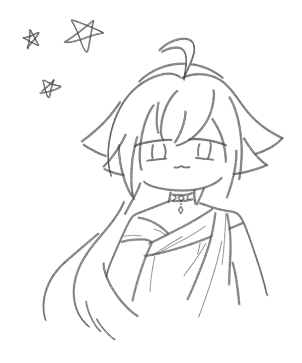
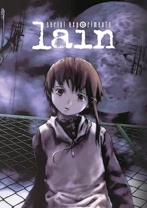
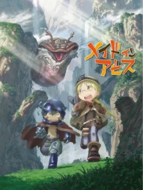
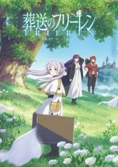

关于我

个人信息
- 名字: mio
- 性别: female
- 年龄: ???
- 生命值: 100 / 100
- 魔力值: 120 / 120
- 喜欢的东西:
动漫 画画 偶尔也会写点代码
喜欢的动漫

Serial Experiments: Lain
メイドインアビス
葬送のフリーレン我的博客
很早就想做个自己的网站了。2023 年 2 月的一天，在 Cloudflare 的帮助下，咱成功部署了网站的第一个版本。当然，和现在的样子大有不同。咱自己搭的网站框架。这里是项目地址: github.com/，设计灵感来自 kotobank.jp/。和最初的设想一样: 简洁，但不失优雅。它不是最好的，但一定是最独一无二的。
2024 年 11 月，咱注册了 sumiyo.link 这个域名（".link" 比较低调）
2025 年初，首轮优化结束，调整全部脚本的函数声明方式，彻底放弃了对 jQuery 库的依赖。4 月，这里遭受了一场小规模的后台爆破攻击，好在事情没有闹大。
8 月，最近有点忙，网站可能要停更一段时间 ...
11 月，mio 偷偷跑去学画画了（画师都不是学出来的，全是逼出来的）。总之就是咱有能力去亲自设计站娘了，于是就有了这次大更新。哦，对了，结课论文还没写完 ...